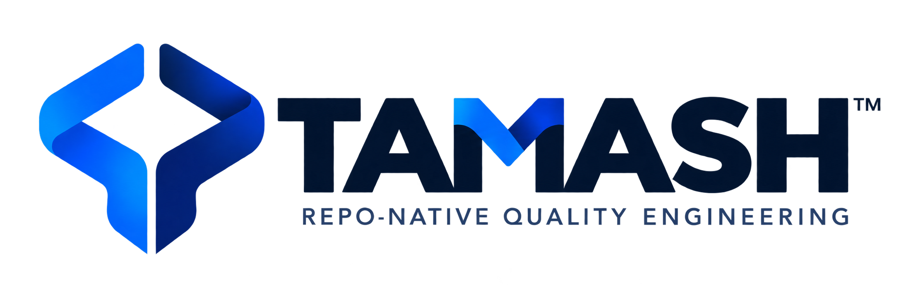
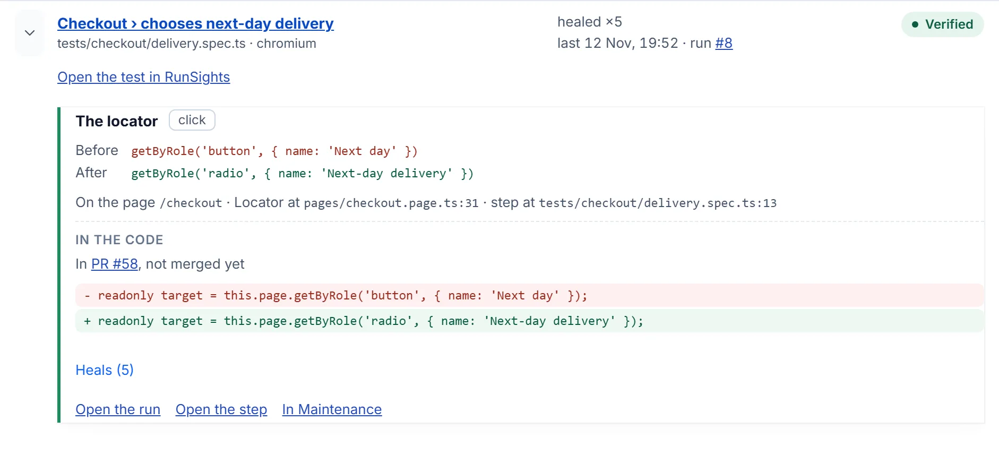
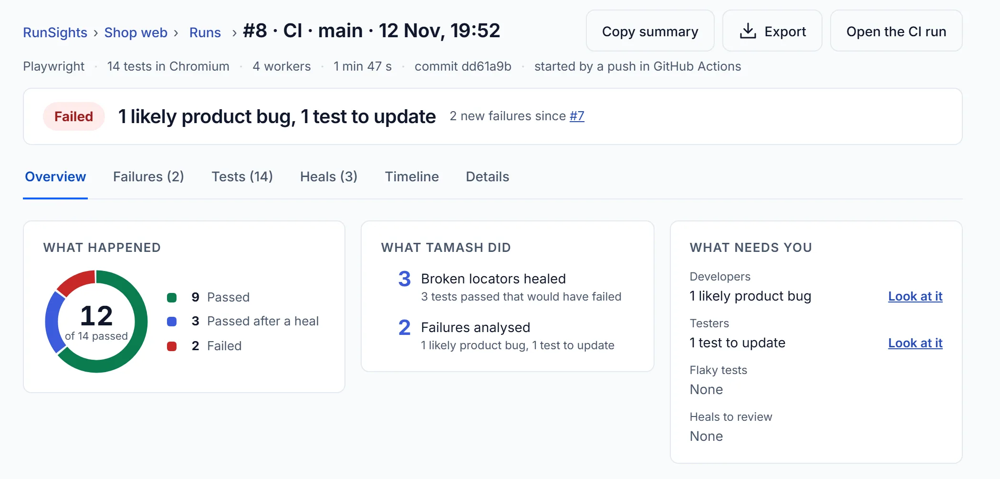

The test goes on
A click or a fill cannot find its element. Shield finds the element the test meant, by what it is for, and the run continues. The console says so, once.

TAMASH · Shield and RunSightsA renamed button should not fail the nightly run. Shield heals a broken locator while your Playwright or Cucumber test runs, then writes the fix into your code and proves it with healing off. RunSights shows every run, and why each failure happened.
One package, configuration only. Your specs, page objects and step definitions stay as they are.
The idea in four steps, then the real screens of the Northstar Shop demo project.
Shield only finds elements again. Your assertions still decide whether a test passes.
A click or a fill cannot find its element. Shield finds the element the test meant, by what it is for, and the run continues. The console says so, once.
Each healed locator is changed where it is defined (the page object, the fixture or the spec), ready for a pull request a person merges.
verify-heals runs the tests of the changed lines with healing off. A fix counts only when its test passes on its own, and the next CI run marks it Fixed.

What broke, what Shield used instead, where it is in the code, and the pull request that fixes it.
Runs from laptops and CI arrive while they are still going. Each failure says whether it is likely a product bug, a test to update or a problem of the setup, with the error, the screenshot and, from CI, the trace and the video.

Run #8 of the demo project: 12 of 14 passed, 3 of them after a heal, and what needs a person.
Then run your tests as you always do.
$ npm i -D @vibetestq/tamash-runsights
$ npx tamash-runsights init --project prj_7f3a91c2
$ npx tamash-runsights login$ npx playwright test
[TAMASH Shield] pages/checkout.page.ts:31 — locator.click "Pay now" -> HEALED [by TAMASH, suggested="getByRole('button', { name: 'Pay now' })"]
8 passed (6.2s)
TAMASH RunSights: run #8 recorded: 7 passed, 1 passed after a heal.init adds two lines to playwright.config; login approves your machine in the browser. In CI, one secret. The full guide covers CI and Cucumber.
Forge adds test management on top of Shield and RunSights: test cases written or imported from TestRail and Xray, cycles run by people and by CI, and a release signed off with the evidence.
Explore Forge →Known as QTP Sudhakar: 21 years in test automation, author of Cracking the QTP Interview, founder of VibeTestQ.